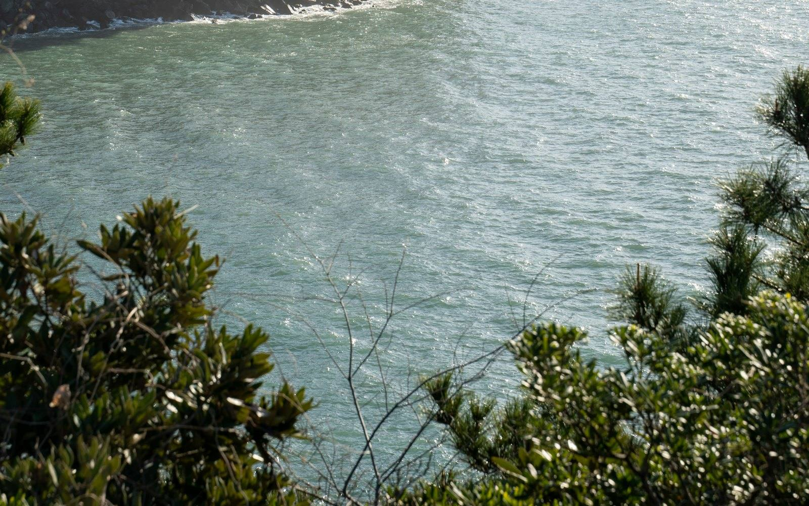
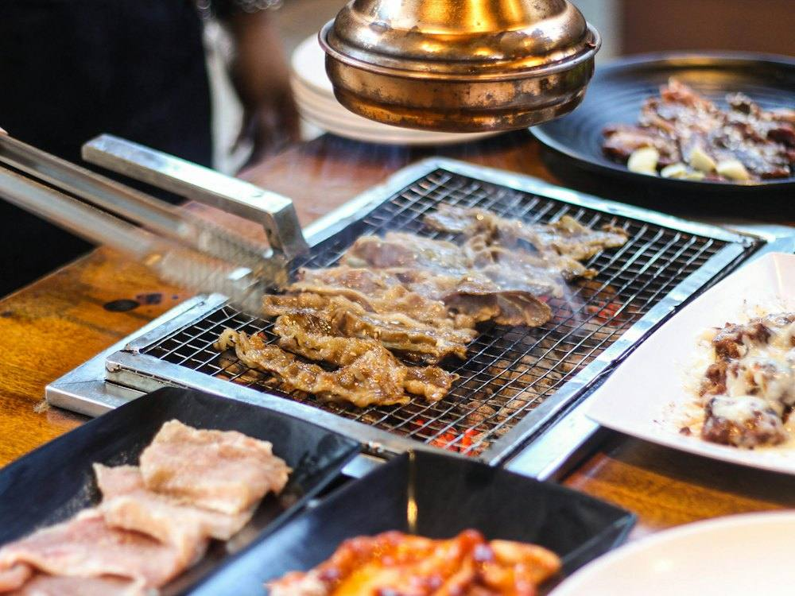

제주 서귀포 중문 · 흑돼지 구이
난축맛돈을 직원이 구워 드려요. 지도에 먼저 저장해 두고, 2~8명은 네이버로 예약하세요.
064-739-0775 · 천제연로 280, 1층
옛 주소(일주서로 873)가 아니라 지금 주소로 찾아 주세요.
난축맛돈 시그니처 62,000원 · YBD 500g 55,000원 (네이버 메뉴 기준)

고기는 직원이 구워 드려요. 유아의자·단체석이 있어요.